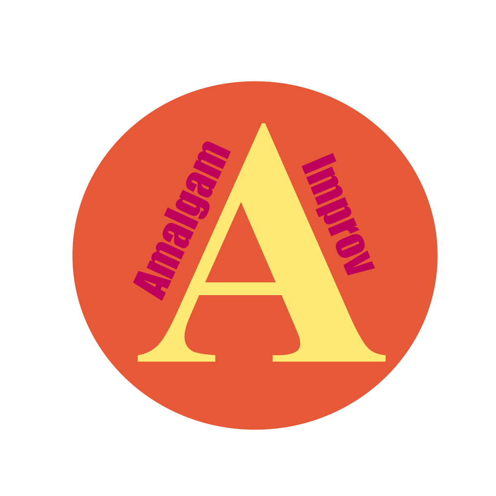
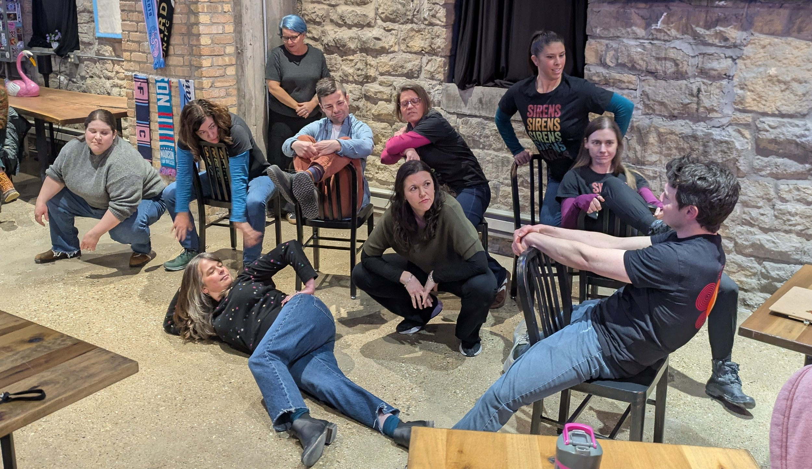
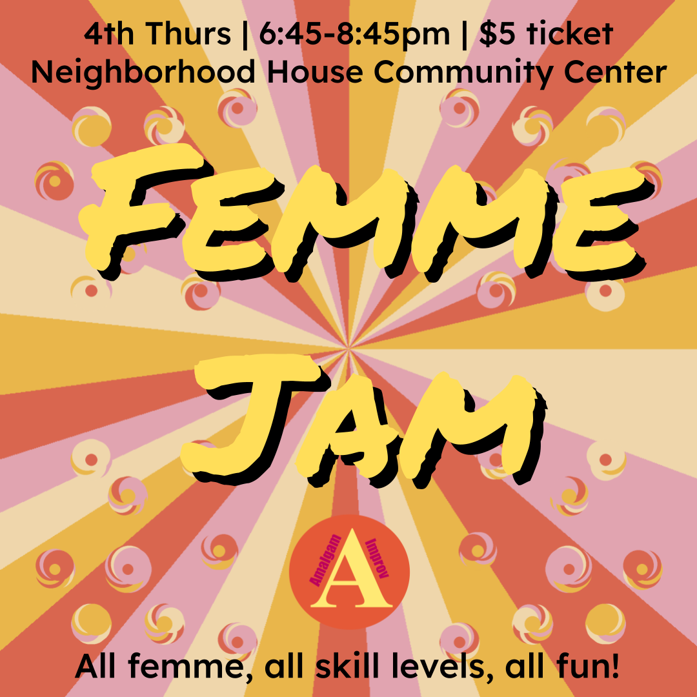
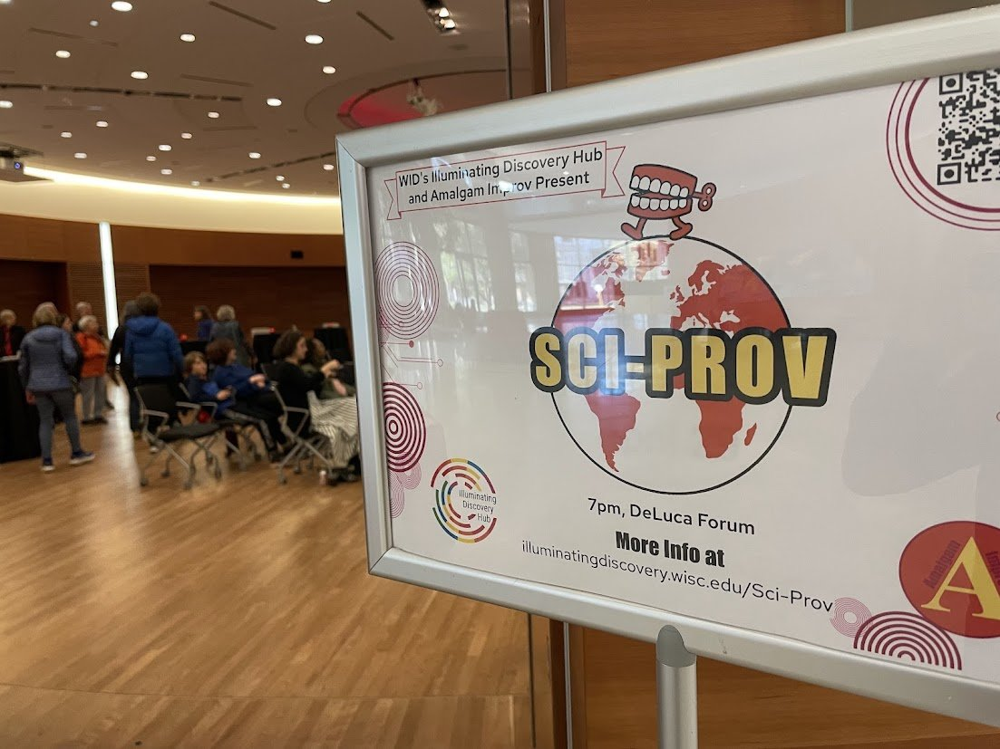
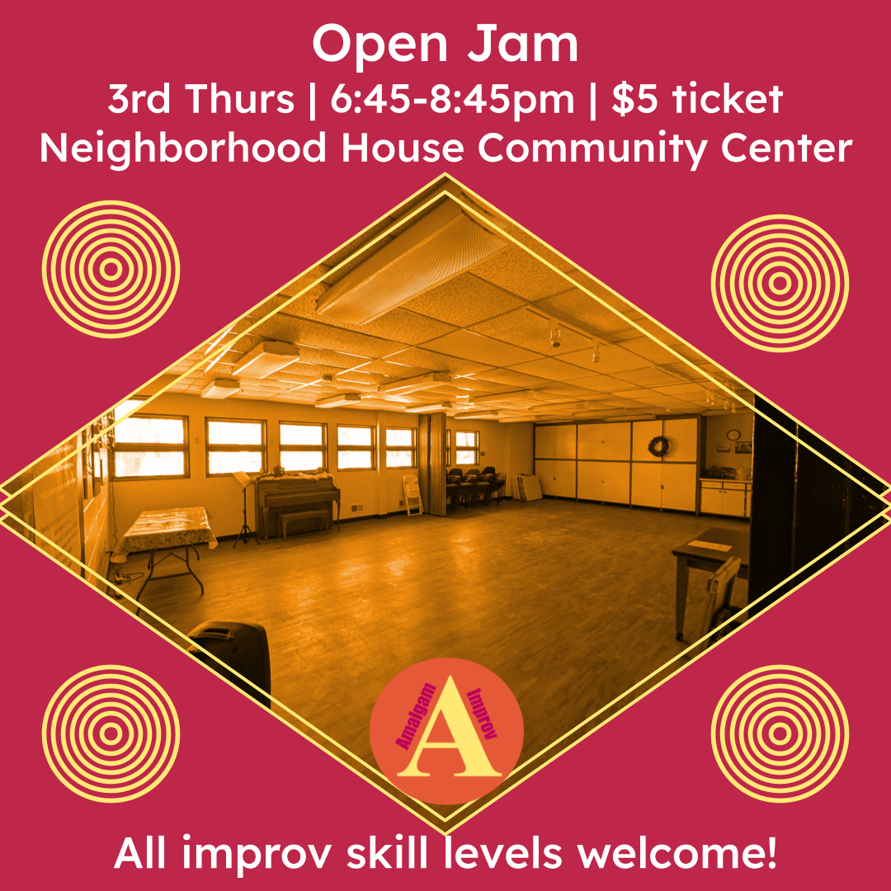
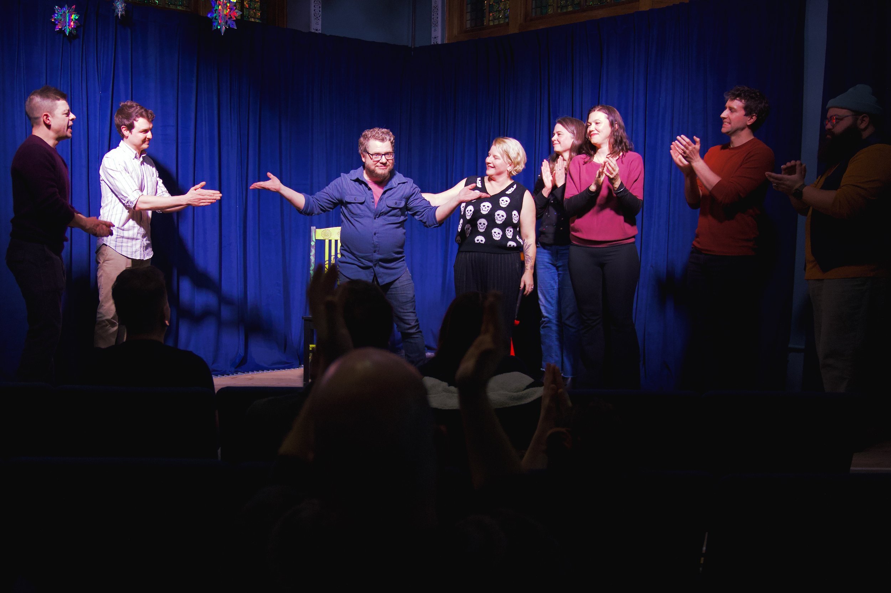
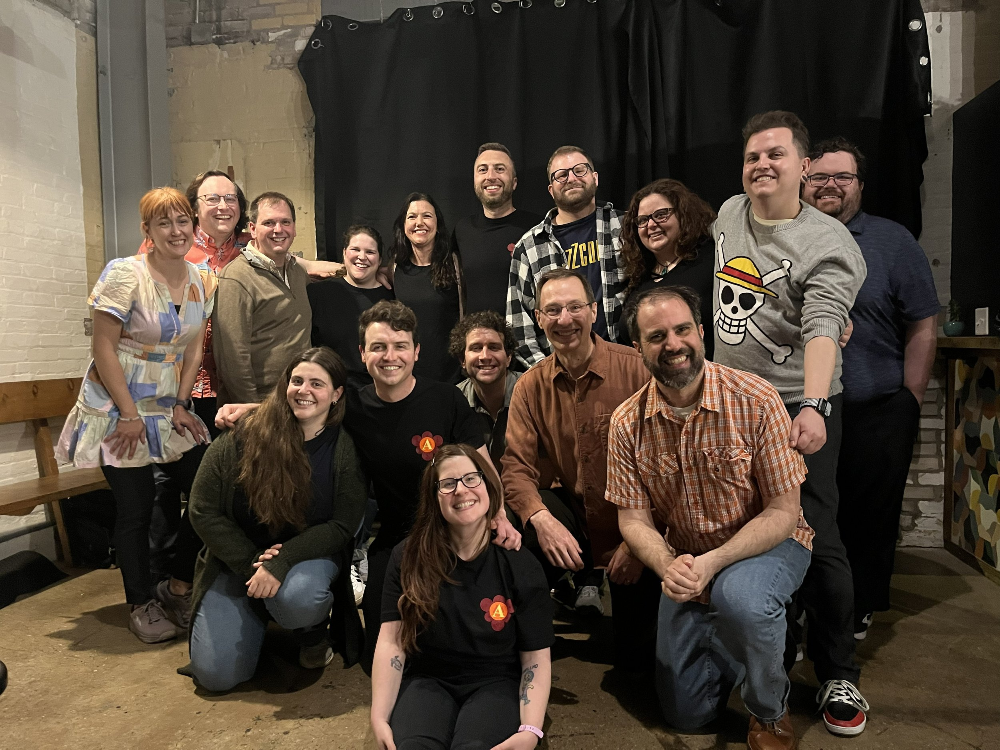
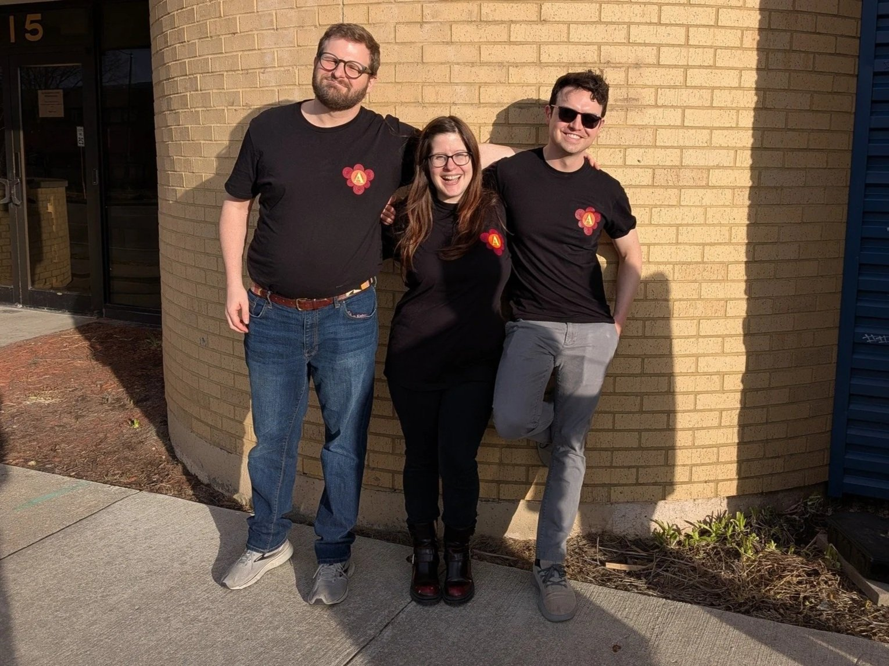

01
A Chicago-sized idea, made in Madison
Amalgam's story started with Ben Rush, inspired by the Chicago improv scene. Chicago has a rich, open improv scene that allows independent teams to play at multiple venues, grow, and experiment. Ben tried to emulate Chicago by putting on the first Half-Baked show at Reverie Baking Co in July 2024 with 6 independent teams in Madison. The show was fun, silly, and successful for the audience and improvisers. So Ben scheduled another Half-Baked show, and then another. Eventually, Half-Baked became a monthly show and Ben searched for more venues to work with. Shows fusing science and storytelling quickly became staples in the first year at the Forward Club. Ben worked with local improvisers to offer workshops on their passions they weren't able to explore and Game of the Scene classes at StartingBlock.
02
Blend the pieces. Make something new.
Eventually, Ben recognized he had accidentally, but nervously and gladly, started an improv group. What started as one show built around a simple idea: independent improv teams deserve regular places to perform, connect, and be seen. The name "Amalgam" came from Ben's love of science and the true belief the blending improvisers from different groups and trying new styles would lead to a collaborative atmosphere for constant growth. The name was exemplified in a Half-Baked show featuring a team from Atlas Improv, Monkey Business Institute, the Improv Lab, and other teams not associated with any group. People who might otherwise have stayed in separate corners of the Madison scene met, mingled, played, and shared ideas. The name fit because the room felt like the mission: blend the pieces, make something new, and let collaboration create growth.

03
More voices. More forms. More possibility.
A year passed and Amalgam invited co-producers for new shows leading to blends of improv with poetry, Star Trek, bad movies, and femme-forward duos. Simultaneously, Big Honey and Amalgam showed the Madison community that independent teams chart their own course to produce new shows, have large audiences, and push the ceiling of improv in Madison.



04
A starting place and a landing place
Amalgam also became more than a production company. It became a starting and landing place for people at different points in their improv lives: first-timers, returning performers, experienced improvisers looking for a new community, and teams ready for more stage time. Weekly jams began in early 2026 with themes designed to welcome people in, offer low-stakes reps, and give improvisers more ways to play. Ben intentionally co-facilitated with other improvisers to help build the next generation of instructors, coaches, and community leaders.

05
Beyond the stage
That same spirit expanded beyond the stage. Through collaborations with the Wisconsin Science Festival and the Wisconsin Institute for Discovery, Amalgam brought improv into science communication: helping scientists practice presence, listening, storytelling, and clarity, then bringing those ideas back to audiences through Sci-prov shows on campus and beyond. Amalgam's work also grew online, with tools and resources like improv maps, festival maps, timers, word generators, calendars, newsletters, and ticketing systems that make it easier for people to find shows, join jams, discover teams, and understand that Madison has a living improv ecosystem.
06
A statement on a bigger stage
As year 2 comes to a close, Amalgam will celebrate with a Second Anniversary show at the Bartell to commemorate the journey and as a statement that improv as an artform is worthy of a large theater space in prime location. Amalgam's Best of Madison 2026 nomination for Best Comedy Group is another sign that the work is being noticed.

07
Collaboration over scarcity
Amalgam began with one person's curiosity about what Madison improv could become. It has grown into a community project built on independent teams, accessible entry points, experimental shows, shared laughter, and the belief that collaboration creates more opportunity than scarcity ever could. The mission now is bigger than producing events. Amalgam wants to help make improv a regularly supported and attended art form in Madison, and to help Madison become known as a city where improvisers can take risks, build audiences, teach, learn, and make work that travels beyond the room it started in.

08
What comes next?
The story is still being written. Amalgam will keep welcoming newcomers, backing independent teams, building unusual stages, making useful tools, partnering across communities, and pushing the limits of what improv can be in Madison.
